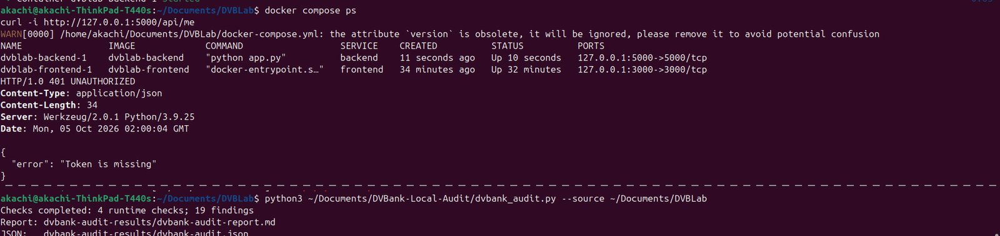
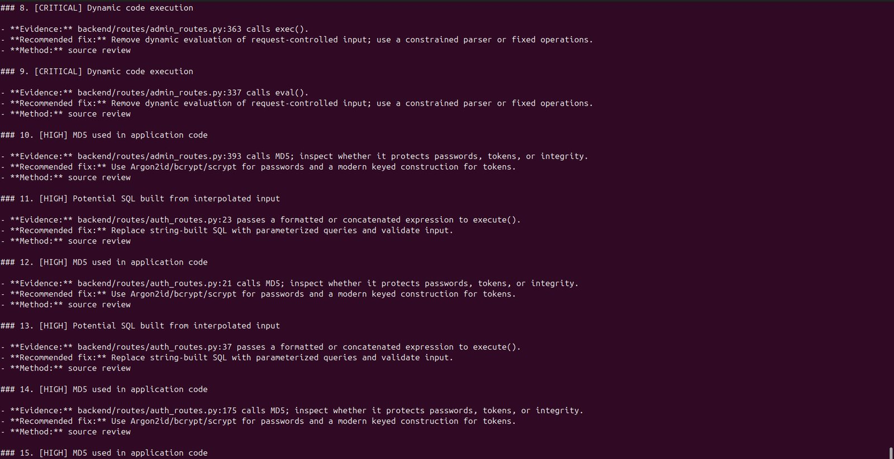

DVBank local security audit
A bounded, read-only audit of an intentionally vulnerable banking application running on loopback only, combining low-impact HTTP checks with a review of selected Python source.
Lab work with synthetic or lab-provided data. No production systems or real customer data were involved.
Evidence


Scope and rules of engagement
The target was limited to a local DVBank instance with backend and frontend bound to 127.0.0.1. HTTP tests were read-only GET requests with short timeouts that did not follow redirects and discarded response bodies. Source review covered selected Python files. No destructive testing, password guessing, transfers or real customer data were involved.
Results
| Category | Recorded results |
|---|---|
| Runtime checks (4) | Transaction receipt returned without authentication; missing browser security headers; credentialed CORS reflecting a test origin. |
| Source review (16 flags) | 1 disabled JWT signature verification; 8 MD5 call sites; 3 dynamic exec/eval patterns; 4 possible interpolated SQL queries. |
| Negative check | Unauthenticated /api/me correctly returned HTTP 401. |
The 19 items are triage findings, not 19 confirmed exploitable vulnerabilities. Static pattern matches still need reachability and impact review.
Remediation
- Require authentication and transaction-ownership checks on receipt data.
- Set explicit trusted CORS origins and add appropriate security headers.
- Verify JWT signatures and restrict allowed algorithms; remove dynamic evaluation.
- Use parameterized queries and review each MD5 use, especially for password storage.
- Retest every fix in the same isolated lab and keep before-and-after evidence.
Why it matters for banks
Receipt exposure, weak token validation and injectable queries are exactly the issues that turn into account data exposure in real financial applications. The audit also shows a disciplined approach: tight scope, low-impact testing and a clear line between a flag and a confirmed vulnerability.